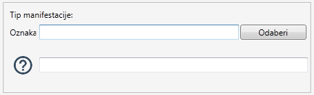
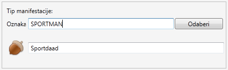
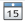
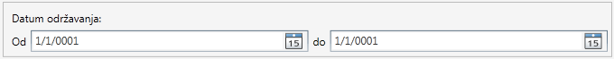
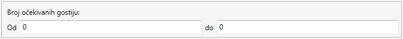
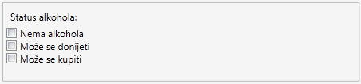
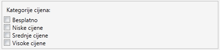
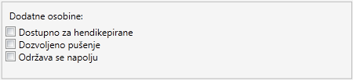

NAPOMENA:
Parametri pretrage su neosjetljivi na mala i velika slova.
Pretraga po oznaci
Sve manifestacije koje u svojoj oznaci sadrže uneseni pojam će biti prikazane kao rezultat pretrage.
Neka postoje tri manifestacije sa oznakama - MANIFEST, MANIFEST2 i ABCDEFGHI.
Ako je parametar pretrage MAN rezultat su prve dvije manifestacije.
Ako je parametar pretrage St2 rezultat je samo druga manifestacija.
Ako je parametar pretrage A rezultat su sve tri manifestacije.
Pretraga po nazivu
Sve manifestacije koje u svom nazivu sadrže uneseni pojam će biti prikazane kao rezultat pretrage.
Neka postoje tri manifestacije sa nazivom - MANIFEST, MANIFEST2 i ABCDEFGHI.
Ako je parametar pretrage MAN rezultat su prve dvije manifestacije.
Ako je parametar pretrage St2 rezultat je samo druga manifestacija.
Ako je parametar pretrage A rezultat su sve tri manifestacije.
Pretraga po tipu manifestacije
Samo one manifestacije koje su odabranog tipa će biti prikazane kao rezultat pretrage.
Odabir tipa manifestacije možemo vršiti na dva načina.
Direktnim unosom oznake tipa manifestacije - u predviđeno polje unosite oznaku tipa manifestacije.
Kada je unos ispravan, pojavljuje Vam se ikonica i naziv tipa manifestacije.
Odabirom tipa manifestacije iz dijaloga.

Slika 1. Izgled komponente za odabir tipa manifestacije

Slika 2. Izgled komponente za odabir tipa manifestacije kada je tip manifestacije uspješno odabran
Pretraga po datumu
Kao rezultat pretrage prikazuju se sve manifestacije čiji je datum održavanja u unesenom opsegu.
Izbor datuma vršite tako što Vam se klikom na ikonicu 
u desnoj strani polja za unos datuma prikazuje kalendar na kom birate željeni datum.
Prvi datum predstavlja minimalan datum manifestacije dok drugi datum predstavlja maksimalan
datum manifestacije.
Datum održavanja manifestacija koje će biti prikazane mora biti između ova dva datuma.

Slika 3. Prikaz komponente za pretragu po datumu
Pretraga po broju očekivanih gostiju
Kao rezutat pretrage prikazuju se sve manifestacije čiji je očekivani broj gostiju u unesenom opsegu.
Kao što vidite na slici 4, u prvo polje se unosi minimalan broj očekivanih gostiju, a u drugo polje
se unosi maksimalan broj očekivanih gostiju.
Broj očekivanih gostiju manifestacija koje će biti prikazane nalazi se između ova dva broja.

Slika 4. Prikaz komponente za pretragu po broju očekivanih gostiju
Pretraga po statusu alkohola
Kao rezultat prikazuju se manifestacije čiji je status alkohola jedan od označenih polja.

Slika 5. Pretraga po statusu alkohola
Dakle, na slici 5. vidite da možete označiti više statusa alkohola, iako manifestacija sadrži samo jednu od ponuđenih vrijednosti.
To znači da, ako ste označili opcije Nema alkohola i Može se donijeti, kao rezultat pretrage Vam se prikazuju sve
manifestacije kod kojih alkohol nije dozvoljen ILI manifestacije kod kojih se alkohol može donijeti.
Pretraga po kategoriji cijena
Kao rezultat prikazuju se manifestacije čija je kategorija cijena jedna od označenih polja.

Slika 6. Pretraga po kategoriji cijena
Dakle, na slici 6. vidite da možete označiti više kategorija cijena, iako manifestacija sadrži samo jednu od ponuđenih vrijednosti.
To znači da, ako ste označili opcije Besplatno i Niske cijene, kao rezultat pretrage Vam se prikazuju sve
manifestacije kod kojih je ulaz besplatan ILI manifestacije kod kojih su cijene troškova niske.
Pretraga po dodatnim informacijama
Kao rezultat prikazuju se manifestacije koje posjeduju označenu osobinu.

Slika 7. Prikaz komponente za pretragu po dodatnim informacijama